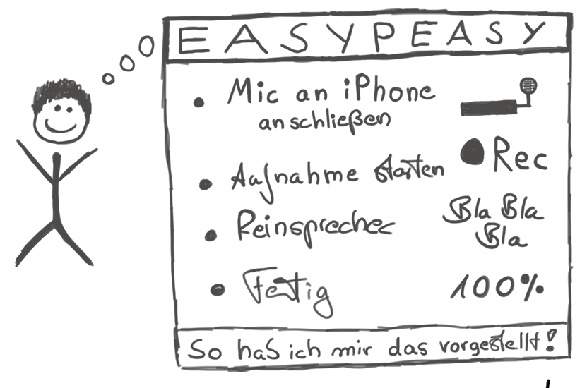

Grundlagen
Tim Berners-Lee stellte am 13.11.1990 eine Webseite online, die heute als offiziell erster Weblog gilt. Im Jahr 1997 startete Dave Winer seinen Blog Scripting News. Im gleichen Jahr wurde erstmal der Begriff "Weblog" verwendet. Weblogs stellen ihre Inhalte über sog. RSS-Feeds in maschinenlesbarer Form zur Verfügung. Dave Winer war der erste, der Weblogs und RSS-Feeds im Jahr 2000 für die erste praktische Umsetzung eines Podcasts verwendete, die damals noch Audioblogs genannt wurden. Apple gab Podcasts mit der Veröffentlichung des iPods 2005 ihren bis heute verwendeten Namen. Neben den Audioblogs sind 2004 auch die Videoblogs (Vlogs) entstanden, die durch das 2005 gegründete Unternehmen YouTube zu großer Bekanntheit gelangt sind. Anders als bei Massenmedien wie Zeitung, Radio oder Fernsehen bieten Podcasts viel mehr Freiheit bei der Formatwahl und der Interaktion mit der Community der Hörer. Podcasts könnten damit einen "Kommunikationsapparat" darstellen, den Berthold Brecht schon in seiner Radiotheorie in den 1930er Jahren dargelegt hat:
Der Rundfunk wäre der denkbar großartigste Kommunikationsapparat des öffentlichen Lebens, ein ungeheures Kanalsystem, das heißt, er wäre es, wenn er es verstünde, nicht nur auszusenden, sondern auch zu empfangen, also den Zuhörer nicht nur hören, sondern auch sprechen zu machen und ihn nicht zu isolieren, sondern ihn auch in Beziehung zu setzen.
Selber Radio zu machen, ist einfach. Man sollte sich nur vorher überlegen, mit wie vielen Leuten man in welcher Situation sprechen will, welche Anforderung an Qualität und Mobilität der Technik stellt und vor allem, wie man die Gesprächsführung gestalten will. Die ersten Versuche werden sicherlich katastrophal ausfallen, aber das ändert sich schnell. Jeder Podcaster blickt mit einem latenten Unwohlsein auf seine erste Sendung, nicht selten auch die Zweite. Aber von da ab gewinnt man schnell an Erfahrung und Routine. Wer dranbleibt wird schnell zu passablen und befriedigenden Ergebnissen kommen.
Die Möglichkeiten eines Gesprächs auszuloten, die Dynamik des Dialogs zur Wissenser- und -vermittlung zu nutzen und eine Sendung mit Spannung, Tiefe und Humor anzureichern sollte das Ziel sein. Man sollte dabei nie nur für sich produzieren, sondern sich stets im Bewusstsein halten, dass das Endergebnis von Dritten auch gehört und genossen werden soll. Mit der Einstellung kommt man schnell voran und kann in der Folge auch im Dialog mit den Hörern am Format feilen und auch für sich selbst den wünschenswerten und notwendigen Spass am Gespräch finden.
Der Wunsch, selbst Audiosendungen in Form von Podcasts zu produzieren stellt viele Neueinsteiger zunächst einmal vor ein großes Problem. Welches Format ist das richtige? Welche Audiotechnik benötige ich, um Aufnahmen in angemessener Qualität durchzuführen, zu bearbeiten und zu veröffentlichen?

Die Antwort auf diese Fragen hängt von vielen Faktoren ab: Wer ist die Zielgruppe? Wie viele Personen sind an dem Podcast beteiligt? In welchem Raum oder welcher Situation sollen die Aufnahmen gemacht werden? Wie tragbar muss das Equipment sein? Soll die Sendung live übertragen werden? Sollen Leute per Telefon mit in die Sendung einbezogen werden?
Um diese Fragen gut beantworten zu können und basierend auf den Antworten die richtige Entscheidung fällen zu können, betrachten wir zunächst verschiedene Aspekte einzeln, um konkrete Empfehlungen geben zu können.
Zum Verständnis der weiteren Diskussion der möglichen Podcast-Formate und den Anforderungen für deren Aufnahme, ist es zunächst erforderlich, ein paar Grundlagen näher zu betrachten, deren Verständnis vielleicht nicht immer vollständig erforderlich, aber zumindest sinnvoll und hilfreich ist.